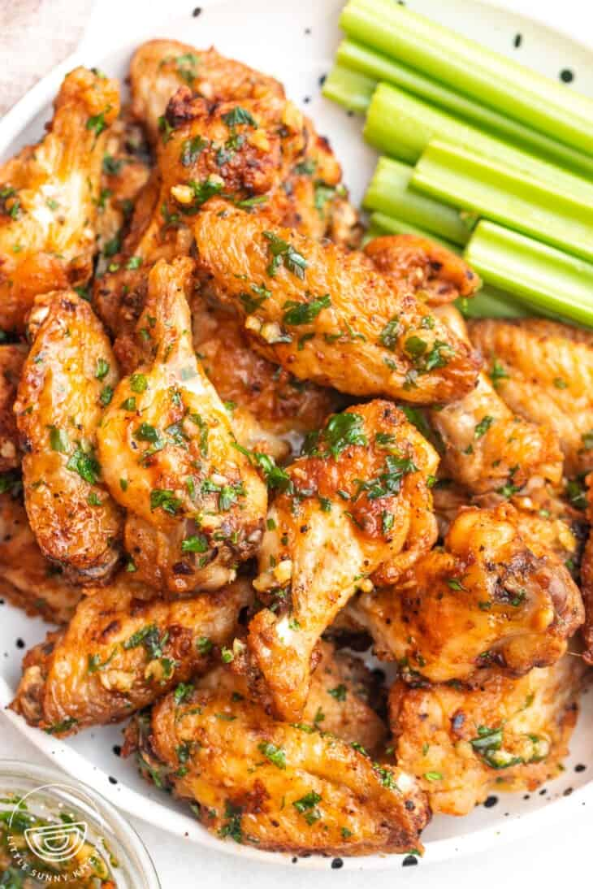

Garlic Butter Chicken Wings
Home

Garlic butter chicken wings are a savory appetizer made byfrying chicken wings until crispy, then tossing them in a sauce made from melted butter, minced garlic, and parsley.
Ingredients
- Chicken wings, 900g
- Baking powder, 2 tsp
- Salt
- Pepper
- Butter
- Garlic
Step-by-Step Process
- Dry chicken wings with paper towels. This is an important step to get rid of the moisture as much as possible and get crispy wings.
- In a large bowl, toss the chicken wings with baking powder, salt, black pepper, and other seasonings if using.
- Fry the chicken until golden.
- To make the sauce, melt the butter, then in a small bowl combine with garlic and parsley. Mix well until combined.
- Toss them together.